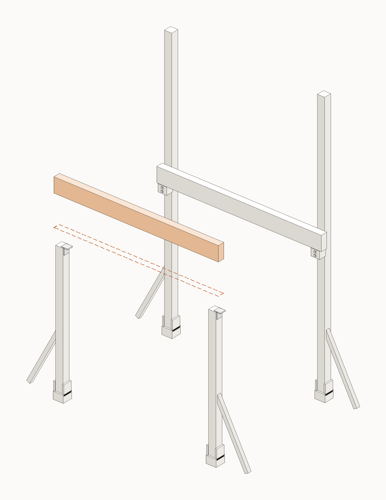

FISA 5 / 11
Grinda din fata pe varful stalpilor

ST stalpGR grindaJO joistaDL dusumeaPO politaC1/C2 coltarCF diagonala
Piese pentru aceasta etapa

GR1
Grinda glulam 90x200
grinda fata

C14
Coltar 100x100x90
2 / stalp

H2~12
Heco 6x100
in coltare
Scule
2 persoaneBormasinaNivela
Pas cu pas
cap surub (fata vazuta)surub/piulita ascuns (pe spate)directia de insurubareoblic = la unghi (toe-screw)
Folosim suruburi + buloane, nu cuie. (Singurul cui e distantierul de 5 mm la dusumea.)
1
Asezati grinda din fata PE varful stalpilor S3/S4 (taiati). Sprijin direct pe lemn, la +1872.
!
CRITIC — Sprijin direct pe varful taiat la +1872, perfect orizontal.
2
Prinde cu cate un coltar C1 pe fiecare fata (2/stalp) + suruburi H2 in stalp si in grinda.
zoom · cum se prinde
3
Verifica: ambele grinzi orizontale, varful la +2072. Ai cadrul de baza.
!
CRITIC — Ambele grinzi la +2072, perfect orizontale, inainte de a continua.
Gata cand
- Grinda pe varful stalpilor
- 2 coltare C1 / stalp
- Ambele grinzi la +2072